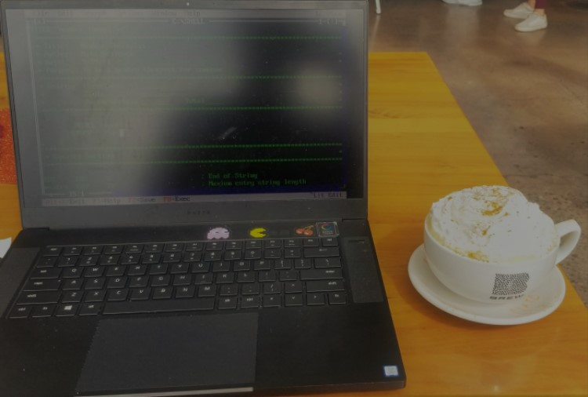
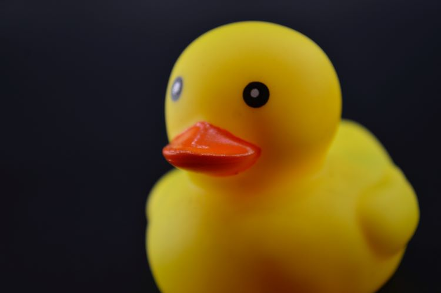
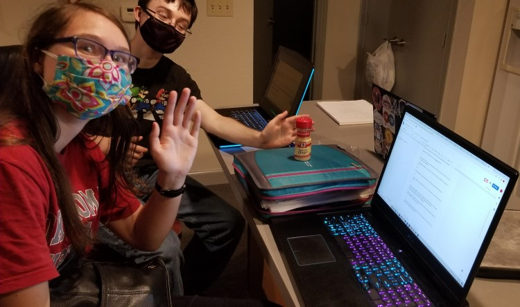

The Life of a CS major is filled with the sandaftion of seeing something you worked hard on finly work.
It can aslo be qurit bussy as CS majors will have a lot of Bif projects so if you want to get ahead of the game,
Click here to see how to Prepare for CS.
Thogh it may be bussy they is still pelty of fun to be had a long the way. But in the end there is nothing qurit like the fell you got when all the little pricese come togather
to make the whole thing work.
Not going to lie there will be a lot of HomeWrok, but grab a nice drink (cafine not requrid but recomeded) and your laptop and you can get it done in no time. really it's not too bad

And rember "When the debugging gets tough the tough get rubber ducks".

Friends are great, but when you have mountans of HomeWrok it can feel like you don't have time. I like to work on projects with a few friends. When working on solo projcts they
can help by trying to break you code.

But also rember to take some time to hangout with friend without the homewrok some times too.
There is a lot to be gaid from being a CS studient beyond just larning how to wite code. For one you can join your campus
ACM Chapter
For exaploe OC's ACM chapter is called BIT club. ACM is not the only opition for activties outside of the
Class room of course. Any of them offer a changes to meet new peolpe or get ledership ecprices it's deiftly woth geting involde in at least one on campus oganiztion that intrests
you.